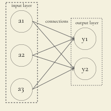
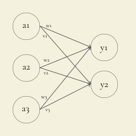
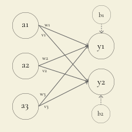
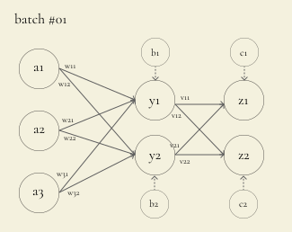
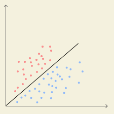

hey there! i have recently started exploring the world of machine learning and have been trying to implement a simple neural network from scratch (referring to "Neural Networks from Scratch"), so i thought of writing a blog series about neural networks, their working under-the-hood and how to implement one in golang.
before directly diving into neural networks, we have to get an idea about what machine learning actually is. if you are not living under a rock, you might have heard about the word "machine learning" or "artificial intelligence" at least once in the recent times. chatgpt, claude, perplexity and gemini are all possible because of the magic of machine learning.
machine learning is a field in computer science which deals with teaching computers to learn from experiences and make some predications, without being explicity programmed. whereas, artificial intelligence is a much broader classfication and it consists of various sub-domains such as machine learning (ML) and natural language processing (NLP).
machine learning is all about different algorithms that are fed with some input data, do some math, and make predictions. for example, email providers like gmail use machine learning algorithms to filter your email and keep spam out of your inbox.
on a high-level, the email spam filtering algorithms are trained (i.e. fed with) on a huge dataset of emails and each email is labeled as "spam" or "not spam". after analyzing, the algorithm eventually learns how to spot whether an email is spam or not by identifying some patterns.
in the above example, the algorithm identifies whether a certain mail is spam or not spam i.e. classifies the input data into different categories. this is an example of classification. in classification, the algorithm predicts which category something belongs to based on its characteristics.
in case of weather forecasting, the algorithm takes in different input data such as temperature history, humidity, wind speed and pressure and predicts the probable temperature. this is an example of regression. in regression, the algorithm predicts a continuous numerical value based on input data.
until now, we have fed the algorithms with input data which trains them, but there are other ways of training as well. let's briefly go through the most popular ones:
in supervised learning, the algorithm is presented with a dataset of inputs along with their desired outputs (labels). for example, to design a machine learning algorithm that categorizes images of humans and cats, the algorithm is fed with thousands of images of humans and cats and each image is labeled as either "human" or "cat".
in unsupervised learning, the algorithm is presented with a dataset of inputs but with their desired outputs, which means the algorithm must find structure, patterns and group similar ones all by itself.
in reinforcement learning, the algorithm performs an action in an environment and then recieves a feedback, basically "learning from mistakes".
neural networks, also known as artifical neural networks (ANNs), is a type of machine learning algorithm that is inspired by the biological brain. neural networks approach various problems by trying to mimic how neurons in the human brain work. they are composed of large number of highly interconnected elements (nodes) that work in parallel to solve a specific problem.
there are different types of neural networks, each specialized for a certain task such as speech recognition or image recognition.
irrespective of complexity of various neural networks, they all have the same fundamental basis. every neural network is built on top of the following elements - neurons, weights and biases.
neurons are the "highly interconnected nodes" of the neural network. neurons act like the processing units in a neural network, receiving inputs from other neurons, performing caluclations and then producing the output that is passed on to the other connected neurons.

in the above image, a1, a2, a3, y1 and y2 are the neurons. a1, a2 and a3 recieve the training data (aka input data) which is then processed and sent to y1 and y2.
a collection of neurons form a layer. in the above image, there are two input and output layers. the input layer consists of a1, a2 and a3 whereas the output layer consists of b1 and b2. the neurons in the current layer affect the value of neurons in the next layer i.e. the value of y1 depends on a1, a2 and a3 and similarly for y2 as well.
weight determines how much a neuron in the current layer affects the neuron in the next layer. each connection of neurons has a specific weight assigned to it.

in the above figure, the weights in the following fashion:
the value of y1 is determined by taking weighted sum of all the neurons which are connected to it. in the above example, it would be calculated as follows:
$$\begin{aligned} y_1 &= a_1w_1 + a_2w_2 + a_3w_3 \\ &= \sum_{i = 1}^3 a_iw_i \end{aligned}$$
and similarly for y2
$$\begin{aligned} y_2 &= a_1v_1 + a_2v_2 + a_3v_3 \\ &= \sum_{j = 1}^3 a_jv_j \end{aligned}$$
currently, our neural network is based on a simple linear equation of the form y = mx but what if we want to offset the result? i.e. if the result of the weighted sum is 0 then we want the neural network to return 2. we would have to add an offset constant to our above-mentioned linear equation, which makes it y = mx + c.
the additional +c in the equation is the bias. bias is used to offset the value of the weighted sum.

in the above image, b1 and b2 are the biases for y1 and y2. every neuron has its' own biases - similar to how every neuron connection has its' own weight.
to calculate the value of y1, we have to just add b1 to the previously calculated weighted sum.
$$\begin{aligned} y_1 &= (a_1w_1 + a_2w_2 + a_3w_3) + b_1 \\ &= \left(\sum_{i = 1}^3 a_iw_i \right) + b_1 \end{aligned}$$
and similarly for y2
$$\begin{aligned} y_2 &= (a_1v_1 + a_2v_2 + a_3v_3) + b_2 \\ &= \left(\sum_{j = 1}^3 a_jv_j \right) + b_2 \end{aligned}$$
let's general the formula using a bit of linear algebra. let's consider a
few matrices - A, W, B and
Y.
A is a row matrix of all the input neurons (also called as
"features"). the shape of the matrix ("shape of a matrix" basically
means dimensions of that matrix) is 1xn, where n is equal to number of
neurons in the current layer.
$$\text{A} = \left(\begin{matrix} a_1 & a_2 & a_3 \end{matrix} \right)$$
W is a matrix of weights of all the neuron connections.
weights present in the ith column of the matrix corresponds
to weights related to ai. the shape of the matrix is mxn,
where m is the number of neurons in current layer and n is the number of
neurons in the next layer.
$$\text{W} = \left(\begin{matrix} w_1 & v_1 \\ w_2 & v_2 \\ w_3 & v_3 \end{matrix} \right)$$
w1, w2 and w3 are present in the 1st column, thereby they are the weights related to a1 and similarly for v1, v2 and v3.
B is also a row matrix of all the biases of neurons in the
next layer. the shape of the matrix is 1xn, where n is the number of
neurons in the next layer.
$$\text{B} = \left(\begin{matrix} b_1 & b_2 \end{matrix} \right)$$
Y is also a row matrix containing values of all the neurons
in next layer. the shape of the matrix is 1xn, where n is the number of
neurons in the next layer.
$$\text{Y} = \left(\begin{matrix} y_1 & y_2 \end{matrix} \right)$$
using linear algebra, we can find relation between A,
W, B and Y
$$\text{Y} = \text{A}\text{W} + \text{B}$$
let's code out a simple neural network with two layers (input and output layer) in golang. the input layer consists of 3 neurons and the output layer consists of 2 neurons.
start with defining A, W and
B matrices. for now, use any random values to populate the
matrices.
package main
func main() {
A := []float64{1, 2, 3}
W := [][]float64{
{0.5, 0.7},
{0.4, 0.6},
{0.3, 0.2},
}
B := []float64{1, 0.9}
}
let's start with implementing the matrix multiplication between
A and W.
AxW := make([][]float64, len(A))
for i := range AxW {
AxW[i] = make([]float64, len(W[0]))
}
for i := 0; i < len(A); i++ {
for j := 0; j < len(W[0]); j++ {
sum := 0.0
for k := 0; k < len(W); k++ {
sum += A[i][k] * W[k][j]
}
AxW[i][j] = sum
}
}
the code starts off with allocating the required size for the result
matrix i.e. AxW. the shape of AxW matrix is mxn,
where m is equal to number of rows of A and n is the number of columns of
W.
the code then loops through every row in A and every column
in W, and then it multiplies the corresponding elements and
calculates the total sum.
the above code assumes that both the matrices are multipliable with each other. for two matrices, the number of columns in the first matrix must be equal to number of rows in the second matrix.
let's now implement the matrix addition between AxW and
B.
result := make([][]float64, len(AxW))
for i := range result {
result[i] = make([]float64, len(AxW[0]))
}
for i := 0; i < len(AxW); i++ {
for j := 0; j < len(AxW[0]); j++ {
result[i][j] = AxW[i][j] + B[i][j]
}
}
the code starts off with allocating the required size for the result
matrix. the shape of result matrix is equal to the shape of
AxW matrix, as two matrices can be added/subtracted only when
their shapes (dimensions) are equal.
here's the entire code until now:
package main
import "fmt"
func main() {
A := [][]float64{{1, 2, 3}}
W := [][]float64{
{0.5, 0.7},
{0.4, 0.6},
{0.3, 0.2},
}
B := [][]float64{{1, 0.9}}
AxW := make([][]float64, len(A))
for i := range AxW {
AxW[i] = make([]float64, len(W[0]))
}
for i := 0; i < len(A); i++ {
for j := 0; j < len(W[0]); j++ {
sum := 0.0
for k := 0; k < len(W); k++ {
sum += A[i][k] * W[k][j]
}
AxW[i][j] = sum
}
}
result := make([][]float64, len(AxW))
for i := range result {
result[i] = make([]float64, len(AxW[0]))
}
for i := 0; i < len(AxW); i++ {
for j := 0; j < len(AxW[0]); j++ {
result[i][j] = AxW[i][j] + B[i][j]
}
}
fmt.Println(result)
}
on running the script, it must print out [[3.2 3.4]]. you can
verify the answer via a calculator or solving the matrices by hand.
the current implementation works but it is pretty rough and has a lot of
areas of failure. let's make a few utility functions related to different
matrix operations so that we don't have to write out the logic from
scratch, using for loop, every time we want to do that
specific matrix operation.
let's create a new distinct type named Matrix, on which we
will define our utility functions as custom methods.
package math
type Matrix [][]float64
over here, we are creating a new distinct type and not a type alias. to
define a type alias, we have to add = operator in between.
type Matrix = [][]float64let's start with methods which return metadata related to the matrix i.e. return number of rows and columns.
func (m Matrix) Rows() int {
return len(m)
}
func (m Matrix) Cols() int {
return len(m[0])
}let's also add another helper function which allocates memory for a matrix with given number of rows and columns.
func AllocateMatrix(rows, cols int) Matrix {
matrix := make(Matrix, rows)
for i := range matrix {
matrix[i] = make([]float64, cols)
}
return matrix
}now let's utilize these functions to implement matrix addition.
func (m Matrix) Add(n Matrix) Matrix {
if (m.Rows() != n.Rows()) || (m.Cols() != n.Cols()) {
panic("invalid dimensions")
}
result := AllocateMatrix(m.Rows(), n.Cols())
for i := 0; i < m.Rows(); i++ {
for j := 0; j < n.Cols(); j++ {
result[i][j] = m[i][j] + n[i][j]
}
}
return result
}the code is pretty much the same as the barebones for-loop which we wrote initially. the only additional thing that is added is checking if both the matrices can be added or not i.e. checking if their dimensions are equal.
let's also implement matrix multiplication.
func (m Matrix) Multiply(n Matrix) Matrix {
if m.Cols() != n.Rows() {
panic(fmt.Errorf("invalid operation, tried to multiply %dx%d matrix with %dx%d matrix", m.Rows(), m.Cols(), n.Rows(), n.Cols()))
}
result := AllocateMatrix(m.Rows(), n.Cols())
for i := 0; i < m.Rows(); i++ {
for j := 0; j < n.Cols(); j++ {
sum := 0.0
for k := 0; k < n.Rows(); k++ {
sum += m[i][k] * n[k][j]
}
result[i][j] = sum
}
}
return result
}the code is pretty much the same except for the fact that the it now also checks whether both the matrices are multipliable by checking if number of columns of the 1st matrix is equal to number of rows of the 2nd matrix.
time to use these utility functions to refactor main.go.
package main
import (
"fmt"
m "nn/math"
)
func main() {
A := m.Matrix{{1, 2, 3}}
W := m.Matrix{
{0.5, 0.7},
{0.4, 0.6},
{0.3, 0.2},
}
B := m.Matrix{{1, 0.9}}
result := A.Multiply(W).Add(B)
fmt.Println(result)
}the code looks much more cleaner and elegant! and it is also much easier to understand what is exactly happening.
until now we have only worked with single hidden layer, which was the output layer. let's add in another layer.
there is a slight change in naming convention - the weights of first layer
are denoted as wij where i is the index of neuron
in the current layer and j is the index of neuron of in the
next layer and similarly for weights of second layer but it is denoted as
vij.
adding more layers to a neural network, allows the network to learn more complex patterns and relationships within the input data.
implementing it in code is pretty easy. the output of first hidden layer
is the input of second hidden layer, so in place of A, we'll
use result1 as the input while calculating values in the
output layer (second hidden layer). W1 and
B1 are the weights and biases corresponding to first hidden
layer and similarly for W2 and B2.
package main
import (
"fmt"
m "nn/math"
)
func main() {
A := m.Matrix{{1, 2, 3}}
W1 := m.Matrix{
{0.5, 0.7},
{0.4, 0.6},
{0.3, 0.2},
}
B1 := m.Matrix{{1, 0.9}}
W2 := m.Matrix{
{0.7, 0.9},
{-0.4, 0.3},
}
B2 := m.Matrix{{1.1, -0.9}}
result1 := A.Multiply(W1).Add(B1)
result2 := result1.Multiply(W2).Add(B2)
fmt.Println(result2)
}lovely! but let's refactor the code a bit.
let's create a layer of abstraction which generates a hidden layer with random weights and biases based on number of input neurons and number of output neurons.
package neural
import (
m "nn/math"
)
type DenseLayer struct {
Input, Weights, Bias m.Matrix
NInputs, NNeurons int
}
NInputs is the number of input neurons and
NNeurons is the number of output neurons.
func NewDenseLayer(nInputs, nNeurons int) *DenseLayer {
dl := &DenseLayer{}
dl.Weights = m.AllocateMatrix(nInputs, nNeurons)
dl.Bias = m.AllocateMatrix(1, nNeurons)
for i := range dl.Weights {
for j := range dl.Weights[i] {
dl.Weights[i][j] = rand.Float64()*2 - 1
}
}
dl.NInputs = nInputs
dl.NNeurons = nNeurons
return dl
}
NewDenseLayer acts like the constructor for
DenseLayer struct. it returns a new denselayer with randomly
generated weights, in the range of [-1, 1), and zero'ed biases, and sets
the value of NInputs and NNeurons.
rand.Float64 returns a random float in the range of [0, 1),
so to generate a float in the range of [-1, 1), we have multiplied it by 2
and then subtracted 1 from it - a common technique for mapping elements in
range of [0, 1) to [-1, 1).
until now, we have been processing the input data and passing it to the next layer. this is called as forward pass. during forward pass, the input data moves from the input layer through the hidden layers to the output layer.
func (dl *DenseLayer) Forward(input m.Matrix) m.Matrix {
return input.Multiply(dl.Weights).Add(dl.Bias)
}
Forward method performs a forward pass on that specific
hidden layer, basically returns sum of the weighted sum and biases.
let's utilize this new layer of abstraction in main.go.
package main
import (
"fmt"
m "nn/math"
n "nn/neural"
)
func main() {
input := m.Matrix{{1, 2, 3}}
dl1 := n.NewDenseLayer(3, 2)
dl2 := n.NewDenseLayer(2, 2)
result1 := dl1.Forward(input)
result2 := dl2.Forward(result1)
fmt.Println(result2)
}the above code performs a forward pass on a neural network with 3 layers - input layer with 3 neurons, hidden layer with 2 neurons and output layer with 2 neurons.

neither rome is built within a single iteration nor a neural network is trained with a single batch of input data. (sorry for the bad joke)
we have to tweak our forward pass logic to support batch inputs, as the one mentioned above, and return individual outputs for each set of inputs.
// expected input
input := m.Matrix{
{1, 2, 3},
{4, 5, 6},
}
// expected output
output := m.Matrix{
{0.4, -0.56},
{-7.89, 0.98},
}but just adding another row to the input matrix wouldn't work, as in our forward pass method, bias is a row matrix, and with batched inputs, the weighted sum wouldn't be a row matrix as earlier, and two matrices of different dimensions can't be added.
a solution for this is to loop through the input matrix, where the type of
each element is []float64. convert the elements from
[]float64 to a row matrix, perform the calculations, convert
it back to []float64 and append it to a result matrix.
let's code out the utility functions related to conversion between
[]float64 and row matrix.
func ToRowMatrix(v []float64) Matrix {
m := AllocateMatrix(1, len(v))
for i := range m {
for j := range m[i] {
m[i][j] = v[j]
}
}
return m
}func (m Matrix) ToFloatSlice() []float64 {
if len(m) != 1 {
panic("not a row matrix")
}
return m[0]
}let's use these utility functions while performing forward pass.
func (dl *DenseLayer) Forward(input m.Matrix) m.Matrix {
result := m.AllocateMatrix(len(input), dl.NNeurons)
for i, v := range input {
result[i] = m.ToRowMatrix(v).Multiply(dl.Weights).Add(dl.Bias).ToFloatSlice()
}
return result
}the shape of input matrix is mxn, where m is the number of batches and n is the number of input neurons (features). the shape of result matrix is mxn, where m is the number of batches and n is the number of output neurons.
update the input to the one as mentioned above and run
main.go again. the output must contain 2 rows and within each
row, there must be 2 values.
with the current architecture of our neural network (multi-layer perceptron), it can only model the predications with linear functions irrespective of number of hidden layers. if f(x) is linear then f(f(f(f(x)))) is also linear.
in the below image, the neural network is trying to classify objects into two different categories represented by red and blue dots.

the network might have high accuracy for simple training data, but as the training data gets more complicated, the network fails to model the predications properly using just linear functions.

notice how the network fails to model the predications using just linear functions. the network labels a decent chunk of objects belonging to red category as blue.
activation functions are the components of the neural network that introduce non-linearity into the network, allowing the networks to learn more complex patterns and relationships. notice the change between how the network models the predications with help of activation function and with just linear functions. activation functions also determine whether a neuron is activated or not and by much as well.

notice how the network is able to model the predications with much more accuracy as compared to with just linear functions.
there are different types of activation functions, so let's go through few of most commonly used ones:
$$f(x) = \left\{ \begin{array}{ll} 1 & \text{if } x > 0 \\ 0 & \text{if } x \leq 0 \end{array} \right. $$
>> check out the graph of step function on desmos
the unit step function is a discontinous function which models the on/off behavior of a switch into the network. it is also known as the heaviside function.
if the value of a neuron is less than or equal to 0 then it is not activated else it is activated. the unit step function is one of the most basic activation function and it clearly shows the concept of a neuron being activated.
but unit step function isn't generally used as an activation function. while training our neural network, the optimizer (the component responsible for training the network) needs to also know how much of the neuron is activated i.e. how close or far is the neuron from the threshold.
with unit step function, the output is either 1 or 0 so the question of "how much" can't really be answered with the help of unit step function. thereby, making unit step function less informative, in terms of being an activation functions.
$$\sigma(x) = \frac{1}{1 + e^{-x}}$$
>> check out the graph of sigmoid function on desmos
the sigmoid function (also called as logistic function) is a S-shaped monotonically increasing function. the major difference between the unit step function and sigmoid function is that sigmoid is monotonically increasing.
due to the monotonically increasing behaviour of the sigmoid function, the optimizer can judge how close or far is the neuron from the threshold.
the range of sigmoid function is (0, 1) (where 0 and 1 are exclusive)
$$\sigma(x) = 0, \text{when} \; x = -\infty \\ \sigma(x) = 1, \text{when} \; x = \infty$$
sigmoid function is a common choice as an activation function when probability distributions are expected in the output layer as the input to the function is transformed into a value between 0.0 and 1.0.
$$\text{tanh}(x) = \frac{e^x - e^{-x}}{e^x + e^{-x}} = 2\sigma(2x) - 1$$
>> check out the graph of tanh on desmos
tangent hyperbolic or tanh function is another common choice as an activation function in neural networks. tanh is a shifted and stretched version of the sigmoid.
the range of tanh is -1.0 to 1.0, as compared to 0.0 to 1.0 in the case of sigmoid. generally, tanh is preferred over sigmoid as it performs better.
but there is an issue with both tanh and sigmoid and that is vanishing gradient problem. i won't be going too deep into this topic as it requires the knowledge of backpropagation. i will be covering this topic along with backpropagation in the next part of this series.
$$f(x) = \left\{ \begin{array}{ll} x & \text{if } x > 0 \\ 0 & \text{if } x \leq 0 \end{array} \right. = \text{max}(0, \; x) $$
>> check out the graph of ReLU on desmos
rectified linear activation function or ReLU is a simple yet effective non-linear activation function. if a value is greater than 0 then it outputs it as it is else it outputs 0.
ReLU addresses the vanishing gradient problem, making it effective in deep learning architectures.
but there is a problem with ReLU as well - dying ReLU problem. as this topic also requires knowledge of backpropagation, i would be covering this topic, along with vanishing gradient problem, in the next blog post in this series.
but here is a simple explaination of dying ReLU problem which is enough to give you the context to understand why leaky ReLU exists.
the dying ReLU problem occurs when neurons using the ReLU activation function become permanently inactive during neural network training (i will deep dive into what neural network training is and how does it happen in later blog posts). these neurons consistenly output 0 for any input, effectively dying and stopping their "learning" process.
$$f(x) = \left\{ \begin{array}{ll} x & \text{if } x > 0 \\ 0.01x & \text{if } x \leq 0 \end{array} \right. = \text{max}(0.01x, \; x)$$
>> check out the graph of leaky ReLU on desmos
leaky ReLU came into existence to fix the issue of the dying ReLU problem. rather than outputting 0 which leads to dead neurons, the leaky ReLU output that value multiplied by a tiny fraction such as 0.01.
$$S(x_i) = \frac{e^{x_i}}{\sum_{j = 1}^{n} e^{x_j}}$$
>> check out the visualization of softmax on desmos
the softmax function is a special one as it doesn't take in a single input but rather a vector of inputs and returns a vector of probabilities. \(S(x_i)\) indicates the probability for \(x_i\) element in the input vector.
$$\begin{bmatrix} 1 \\ 2 \\ 3 \end{bmatrix} \to S(x) \to \begin{bmatrix} 0.09 \\ 0.245 \\ 0.665 \end{bmatrix}$$
the softmax function is used in the output layer of the neural network to convert the raw output scores into probabilities. with the help of the softmax, the output values are always in the range of (0, 1) and sum up to 1, making them interpretable as probabilities.